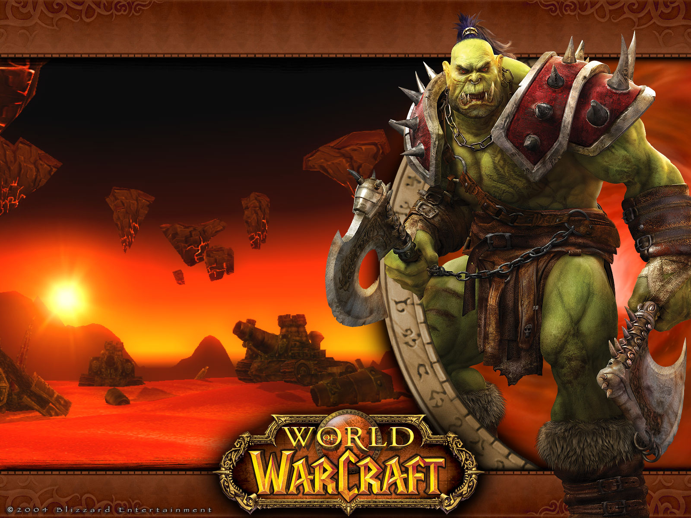
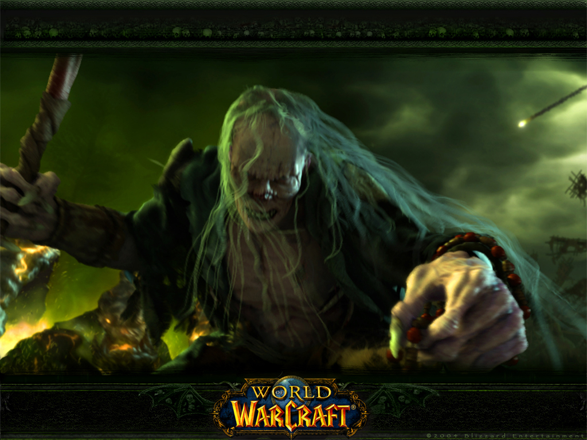
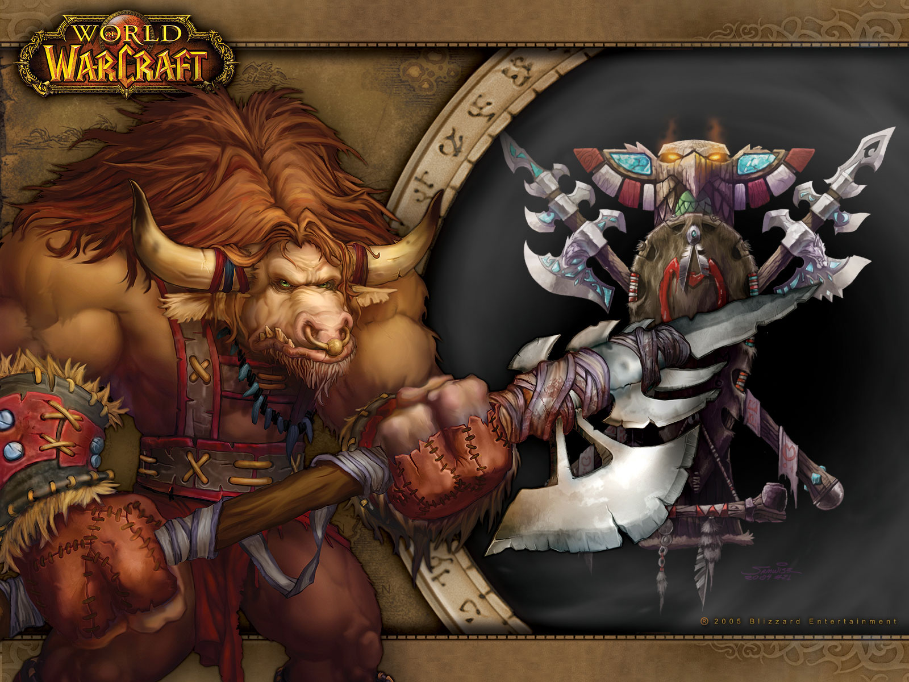
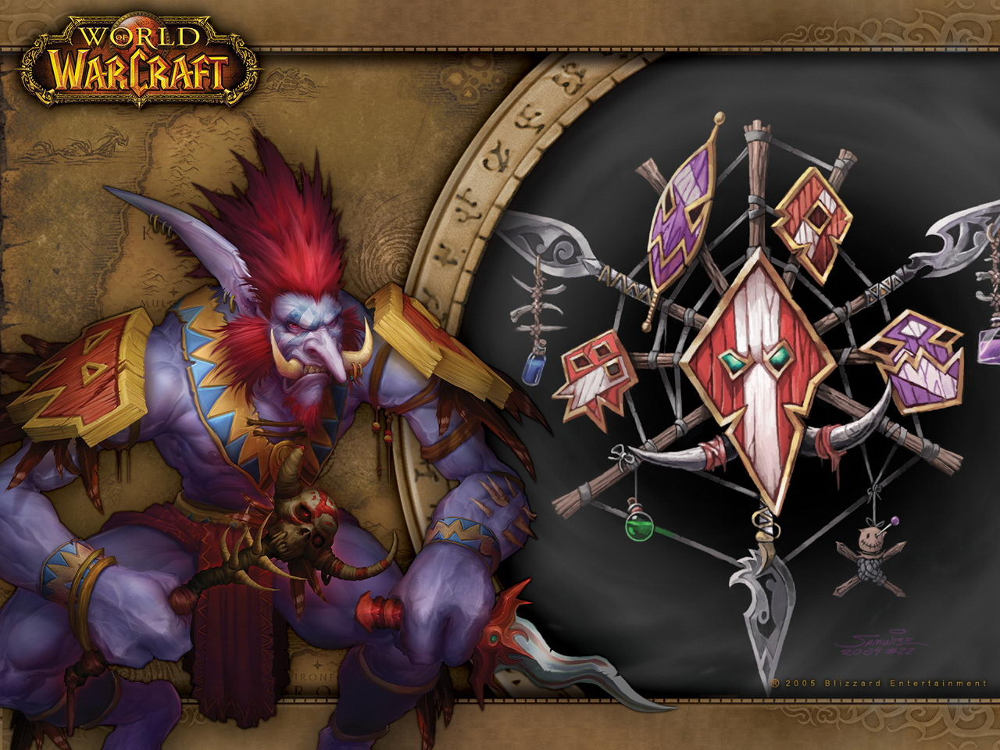
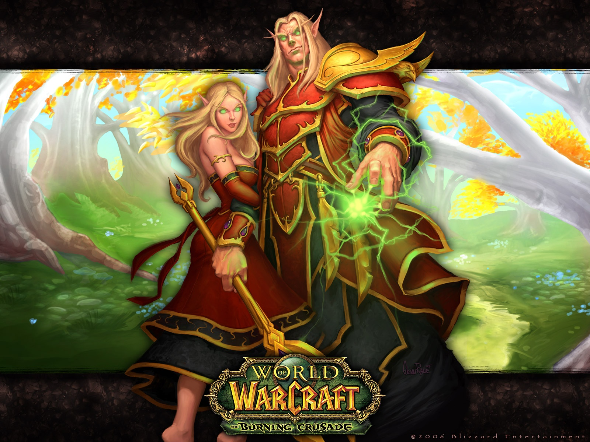
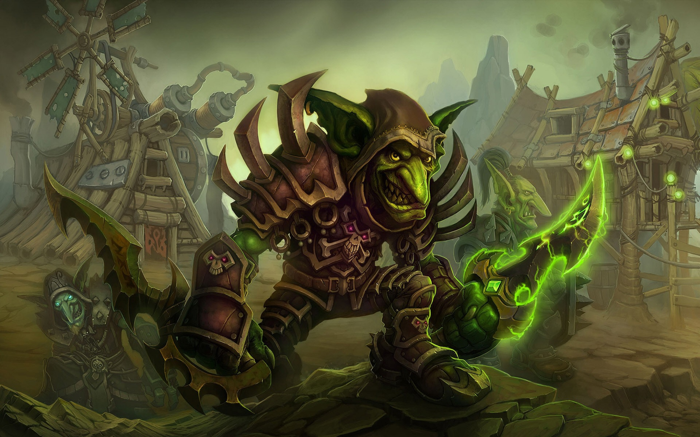

Raças da Hord:
Orc, em que Orgrimmar é a cidade principal (classic wow):

Undead, em que Undercity é a sua cidade principal (Classic wow):

Tauren, Thunder Bluff como cidade principal (Classic wow):

Troll, Orgrimmar também é sua cidade principal (Classic wow):

Blood Elf, Silvermoon é a sua cidade principal (Burning Crusade):

Goblin, não tem cidade principal, apenas Bilgewater Harbor que é um porto para sair da ilha a que se encontram (Cataclysm):
